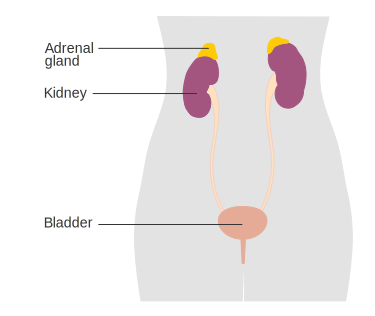
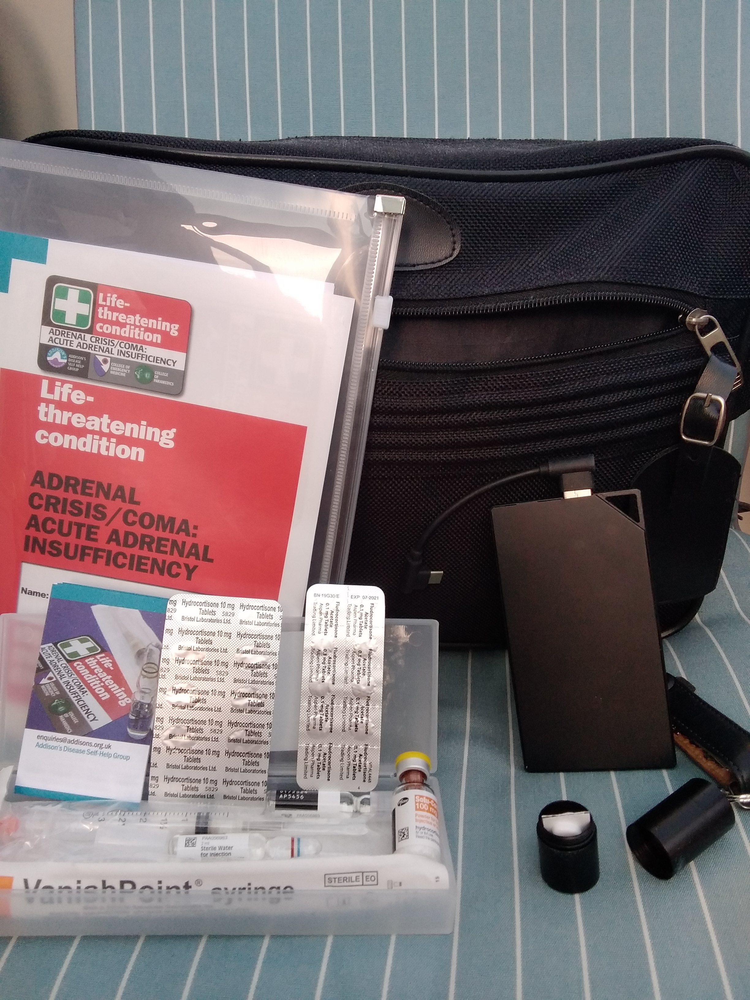

Addison's Disease
9 thousand people in the UK


- Extreme weakness, feeling terrible, vomiting, headache
- Light-headedness or dizziness on sitting up or standing up
- Feeling very cold, uncontrollable shaking;
back, limb or abdominal pain
- Confusion, drowsiness, loss of consciousness
- give emergency hydrocortisone injection
- seek urgent medical attention
call 999, stating "adrenal crisis"